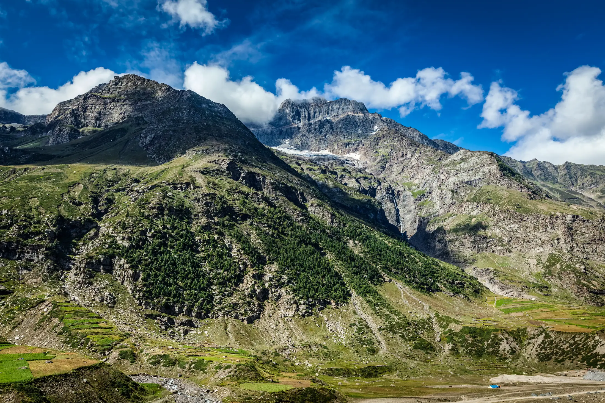

- Hampta Pass is a 5-day crossing from Manali (2,050 m) over a 4,200 m pass into Lahaul, rated moderate (BRS 4) by Bikat Adventures.
- The season is June to October; expect rain and slush on the Kullu side and cold nights of 0 to 5 °C.
- Bikat lists ₹13,500 plus 5% GST; the ₹300 Chandratal entry fee is extra. Bikat advises prior trekking above 3,000 m.
The Hampta Pass trek crosses a 4,200 m pass from the green Kullu valley near Manali into the dry Lahaul side, usually with a day trip to Chandratal lake. Bikat Adventures rates it moderate, runs it June to October, and lists ₹13,500 plus 5% GST.
Who is the Hampta Pass trek for?
Trekkers with at least one earlier Himalayan trek behind them. Bikat says to have trekked above 3,000 m before, and suggests completing a level 3 trek (like Kuari Pass) or a couple of level 2 treks (like Beas Kund or Bhrigu Lake) first. Its fitness benchmark is jogging 4 km in 30 to 35 minutes, plus a weekly 8 km run in an hour. If that sounds like a lot, try an easier trek first. Preview the route on the Hampta Pass 3D page.

Hampta Pass trek itinerary
| Day | Route | Distance and time | Sleep at |
|---|---|---|---|
| 1 | Manali → Jobra (drive) → Chikka | 16 km drive, about 3 km walk | 3,048 m |
| 2 | Chikka → Balu Ka Ghera | 5 km · 7–8 h | 3,600 m |
| 3 | Balu Ka Ghera → Hampta Pass → Shea Goru | 9 km · about 7 h | 3,900 m |
| 4 | Shea Goru → Chhatru; drive to Chandratal and back | 5 km · 4 h, then about 70 km each way | 3,350 m |
| 5 | Chhatru → Manali | about 60 km, 2–3 h | – |
Bikat calls day 3 the longest and toughest day. Its summary table and detailed text disagree on some distances and times, so confirm with your operator.
Best time for Hampta Pass
- June to October: Bikat's running season. Monsoon rain brings flowers and greenery on the Kullu side.
- Bikat gives days of 10 to 15 °C and nights of 0 to 5 °C.
Month pages: June, July, August, September, October. Constant rain, slush and river crossings are normal, per Bikat.

How to reach the start
Manali is the base town and the trek starts and ends there. Bikat's Day 1 drive is about 16 km and an hour to Jobra. Most fixed departures include the drive. Our trek page lists taxi costs from other operators. There are no ATMs after Manali, no phone signal after Sethan or at campsites, and no charging, so use Manali's market for cash and bring a full power bank (Bikat).
Hampta Pass trek cost
Bikat Adventures lists ₹13,500 plus 5% GST. Add-ons: backpack offloading ₹1,500, outdoor insurance ₹206 (Indian nationals only) and a single tent ₹2,000. Not included: the ₹300 per person Chandratal entry fee, meals on road journeys, emergency evacuation, and insurance unless bought. Other operators price differently and include different things; prices change every season, so compare inclusions.
Permits and fees
Bikat includes forest, camping, trek permit and IMF permission fees, up to the Indian rate. Indian and foreign trekkers both need ID and a medical certificate (soft copies sent ahead, originals carried). Foreign nationals need their own travel medical insurance. The Himachal trekking portal lists the trek's rules: take non-biodegradable waste back, don't wash in or pollute streams, and polythene is banned in Himachal Pradesh. Its season dates are from 2022, so check current dates.
What makes Hampta Pass hard
- Pass day: a long day to 4,200 m, then a steep descent of about 50 degrees on the Lahaul side by our trek page's reading.
- Weather and water: rain, slush and river crossings; the last fresh water on day 3 is about 3 km out of Balu Ka Ghera, so fill your bottles.
- Fast start: day 1 gains about 1,000 m of sleeping altitude, from Manali (2,050 m) to Chikka (3,048 m).
What to pack
Thermals, a warm and a rain jacket with rain pants, quick-dry trek pants, waterproof gloves for snow and boulders, waterproof shoes, a head torch and toilet paper. See the packing list.
Safety and altitude
The CDC's Yellow Book says that above 3,000 m you should raise your sleeping altitude by no more than about 500 m a night and add an extra night for every 1,000 m gained. Bikat's plan stays close to that above 3,000 m (+552 m, then +300 m), but the first-day jump from Manali is larger, and day 3 crosses 4,200 m. Never go higher with symptoms; descend if they worsen. Bikat says rescue is not in the fee and that a sick trekker is walked down to the road, so buy insurance. Read altitude sickness on treks and how to read altitude gain, and talk to a doctor before a high trek if you have a medical condition.
Before you book: a short checklist
- Check whether the Chandratal day is part of the plan, and who pays the ₹300 entry fee, which Bikat does not include.
- Ask what happens if rain or a swollen river stops the crossing, and what the alternate plan is.
- Ask about the group size. Bikat says rescue costs are not in the fee, so buy insurance.
- If you have not trekked above 3,000 m, do an easier trek first, as Bikat itself suggests.
- Train with the running and strength routine in get fit for a Himalayan trek.
Sources
- Bikat Adventures: Hampta Pass and Chandratal itinerary
- Himachal Pradesh trekking portal: Hamta Pass
- CDC Yellow Book: High-altitude travel and altitude illness
Quick questions
Is Hampta Pass good for beginners?
Bikat rates it moderate (BRS 4) and recommends a level 3 trek such as Kuari Pass, or a couple of level 2 treks such as Beas Kund or Bhrigu Lake, first. Complete beginners should start easier.
What is the best month for Hampta Pass?
Bikat runs it from June to October, when monsoon rains bring flowers and greenery. Expect rain on the Kullu side whichever month you choose.
How much does Hampta Pass cost?
Bikat lists ₹13,500 plus 5% GST, with backpack offloading ₹1,500 extra. Chandratal entry (₹300 per person) and emergency evacuation are not included.
Is the Hampta Pass trek dangerous?
It has real hazards: river crossings, slush, snow near the pass and a steep descent. Go with a registered operator, carry insurance and turn back if you feel unwell.